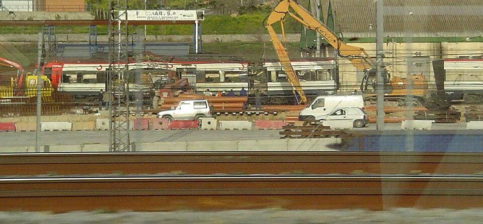

Más de cien muertos en un atentado coordinado contra cuatro trenes de cercanías
Diez explosiones casi simultáneas destrozaron entre las 7.37 y las 7.40 cuatro convoyes en Atocha, la calle Téllez, El Pozo y Santa Eugenia. Los heridos se cuentan por centenares y las cifras crecen hora a hora. La autoría no está esclarecida esta noche.

A las siete y treinta y siete de la mañana, cuando los trenes de cercanías entraban en Madrid cargados de trabajadores y estudiantes, la primera explosión reventó un convoy en la estación de Atocha. En los tres minutos siguientes estallaron otras nueve bombas en cuatro trenes: en la propia Atocha, en la calle Téllez, en El Pozo del Tío Raimundo y en Santa Eugenia. Quienes llegaron primero hablan de un silencio irreal entre los hierros, roto por los teléfonos móviles que sonaban sin que nadie los contestara. Madrid ha amanecido hoy con la mayor matanza que recuerda esta ciudad en tiempos de paz.
Las cifras de esta noche son provisionales y crueles: más de un centenar de muertos, y el recuento crece hora a hora; los heridos se cuentan por centenares, muchos de extrema gravedad, repartidos por los hospitales de toda la región. El recinto ferial de Ifema ha sido habilitado como depósito y como lugar de espera para las familias, que recorren listas y pasillos con fotografías en la mano. Los hospitales pidieron ayuda a primera hora y a media mañana pedían lo contrario: que no acudiera más gente a ofrecerse, que ya no cabía. El Gobierno ha decretado tres días de luto oficial.
El atentado se produce a setenta y dos horas de las elecciones generales del domingo. Los partidos han suspendido la campaña y los actos previstos, y la jornada de reflexión llegará este año con un peso que ninguna ley electoral supo prever. Sobre la autoría, la verdad de esta noche es la confusión: las primeras atribuciones oficiales apuntaron a la banda terrorista ETA; a última hora, los investigadores estudian indicios que abren otras hipótesis, y ninguna fuente se pronuncia con certeza. Este diario consigna lo que se sabe, y lo que no se sabe lo dice: a esta hora, no se sabe.
Si algo ha estado a la altura del horror, ha sido la respuesta de la ciudad. Los taxistas apagaron los taxímetros y llevaron heridos y familiares durante toda la mañana sin cobrar. Ante los puntos de donación de sangre se formaron colas de horas, hasta el punto de que se rogó a los donantes volver en días sucesivos. Vecinos de El Pozo y Santa Eugenia bajaron a las vías con mantas, agua y escaleras antes de que llegaran los equipos de socorro; hoteles, comercios y particulares ofrecieron lo que tenían. Madrid ha respondido a la mayor crueldad de su historia reciente con una solidaridad que no necesita adjetivos.
Hay fechas en que el oficio de opinar debe callar ante el de contar. Hoy es una de ellas. Contamos que diez bombas segaron al amanecer vidas de trabajadores, estudiantes e inmigrantes que iban a ganarse el día; que la ciudad respondió con sangre donada, taxis gratuitos y manos desconocidas; que el domingo este país está llamado a votar y lo hará de luto. No sabemos aún quién ha sido, y no adelantaremos veredictos que corresponden a la investigación. Sabemos lo que vimos: el peor rostro del ser humano a las siete y media de la mañana, y el mejor, diez minutos después.